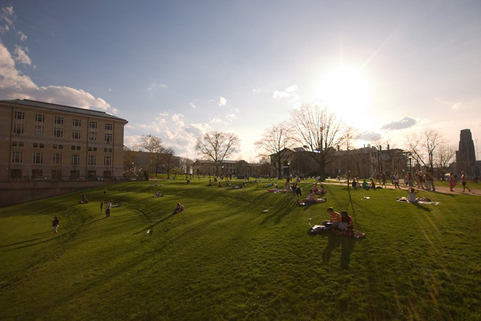

ABOUT ME

Why I'm Running
I know you care about the organizations you’re a part of and want to see them grow. This passion resonates with me, as I have wanted the organizations I am in to grow despite being impacted by limited resources.
I’ll do my best to ensure that your organization’s funding continues to be allocated with fairness, putting student organizations above anything else.
I’ll do my best to ensure that your organization’s funding continues to be allocated with fairness, putting student organizations above anything else.
Campus Involvement
• Society of Hispanic Professional Engineers
• Soulstylz and Dancer Symposium
• President’s Multicultural Student Advisory Council
• Soulstylz and Dancer Symposium
• President’s Multicultural Student Advisory Council
PLATFORM
DIVERSIFY JFC REPRESENTATIVES
Continue to educate the student body about diversity at CMU.
R&D FOR ORGANIZATIONS
Restructure the re-recognition process to include a Student Organization Summit with collaboration from CoSO.
IMPROVE JFC EFFICIENCY
Support the introduction of new intiatives on campus, similar to Gender Neutral Housing.
ISSUES
Transportation Fee
• Include bike sharing program in Transportation Fee
• Stabilize the constant growth of the fee
• Educate students about cost of Pittsburgh public transportation
• Stabilize the constant growth of the fee
• Educate students about cost of Pittsburgh public transportation

Student Activities Fee
• Research the constant increase of the Student Activities Fee
• Investigate alternative funding processes
• Increase transparency of funding methods
• Investigate alternative funding processes
• Increase transparency of funding methods
Media Fee
• Promote availability of online publications to students
• Advocate for the availability of weekend newspapers in Entropy
• Investigate delivering weekend newspapers directly to students
• Advocate for the availability of weekend newspapers in Entropy
• Investigate delivering weekend newspapers directly to students